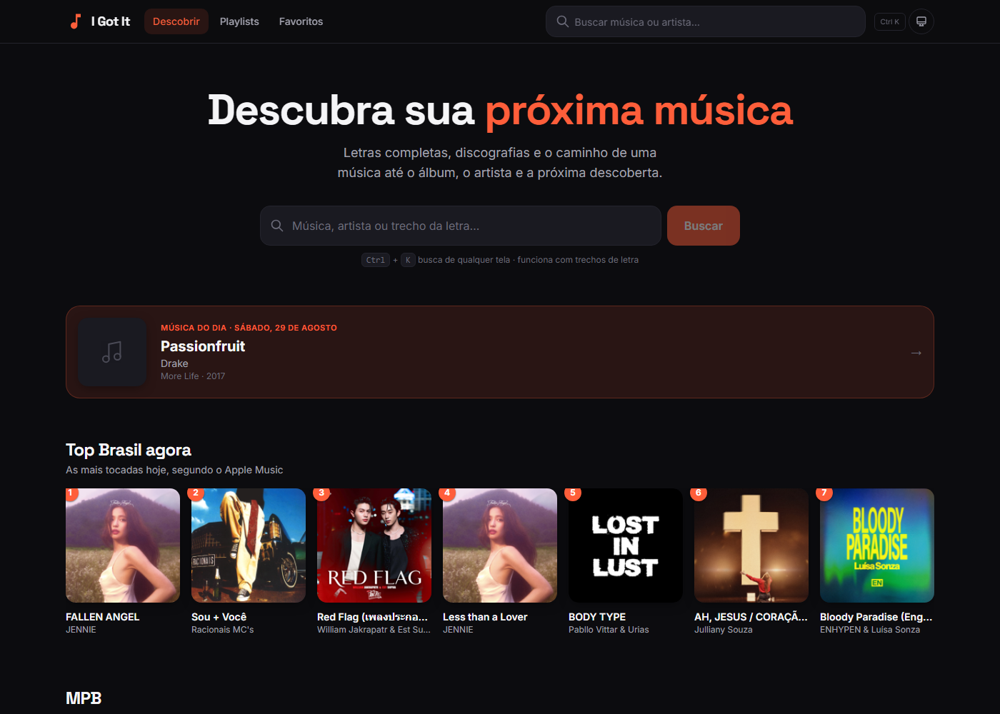
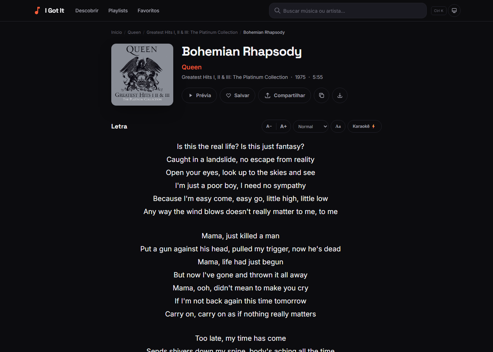
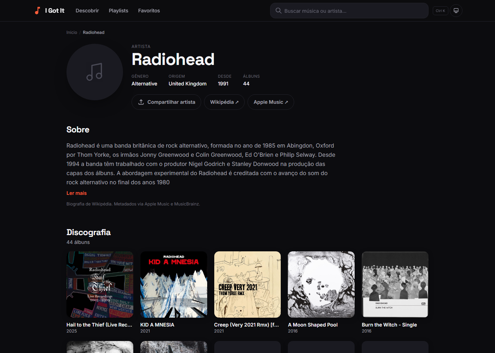

Project 03 — Case study
I Got It
A music discovery platform where every song is a junction: the lyric leads to the album, the album to the artist, the artist to the next discovery — and from any point you get a link that stands on its own when shared.
Live · evolving
01 — The product
From a search to the full context
Search by title, by artist, or by the fragment of a lyric you still remember. From there: full lyrics, synchronised karaoke, a 30-second preview, the discography, the biography and the next track.



With no API key at all the app is fully functional — search, lyrics, karaoke, discographies, previews, favourites and sharing all come from public sources. The AI features (lyric interpretation, trivia, translation, playlists) are an optional layer: when the key is absent they disappear without breaking anything around them.
02 — Architecture
Four layers and one boundary that matters
01
Interface
pages · components
own design system
02
State
useResource
PlayerContext · router
03
Domain
catalogue · lyrics
optional AI
04
Infrastructure
L1+L2 cache
serverless functions
The boundary between metadata and lyrics
The decision that organises everything else: metadata is public fact, lyrics are licensed content, and the two live in separate services. Artist, album, track, duration and cover art come from one place; the lyric comes from another.
This is not architectural purism — it is what allows opening a full album without firing a single lyric request, and swapping the lyrics provider without touching navigation. A boundary drawn from a legal constraint turned out to be the best technical decision in the project.
A hand-written router, and the decision not to migrate
The app uses a router written by hand on top of the History API, in roughly 120 lines. Any reviewer's obvious question is why not Next.js, or at least react-router. The answer is written inside the app itself, on its About page: migrating does not pay for itself, because the problem a framework would solve — server rendering for SEO — is already solved another way, and the current router fits in the head of whoever maintains it.
Legacy URL-escaped routes still resolve, and English aliases
(/search, /favorites, /about) coexist with
the Portuguese paths. No link already shared is broken.
Two-layer cache with revalidation
Memory and local storage, with a stale-while-revalidate policy and LRU
eviction: the screen paints immediately with what already exists and refreshes
itself when the new response lands. A single point —
useResource — binds that contract to React, so no screen needs to
know a cache exists.
03 — The hard problem
SEO inside a client-side application
Social crawlers do not execute JavaScript. A link pasted into WhatsApp would show the app's generic title, not the song's.
Runs JS
Tags written client-side are indexed normally: title, description, canonical, Open Graph and structured data for song, album, artist and breadcrumb.
WhatsApp · X · Slack
Does not
Those agents are routed to a serverless pre-rendering function, which resolves the requested entity and returns HTML already carrying the right tags for that song, album or artist.
Both paths start from the same description. There is no crawler version of the tags and a separate browser version — there is one, consumed two ways. Without that, the two copies would diverge on the first change.
04 — Rights and limits
What the app refuses to do
Nothing is scraped from lyrics sites
All content comes from APIs that set out to serve it, and every source is shown in the interface. The reader knows where each piece of data came from.
When the source says "excerpt only", it is an excerpt
Providers signal when they cannot release the full lyric. The app honours the signal, shows only the permitted excerpt and sends the reader to the source instead of working around the limit.
A preview is a preview
It is the 30 seconds the public licence allows. The full track is always a link to the official platform — the app neither hosts nor serves protected audio.
The API key never reaches the browser
AI features go through a server-side proxy, restricted to its own origin and rate-limited per IP. There is an escape hatch for fully static hosting that would expose the key in the client — and it is documented as insecure, precisely so nobody uses it unknowingly.
05 — Data sources
Where each piece of information comes from
| Source | What it provides |
|---|---|
| Apple iTunes Search | Artists, discographies, tracklists, cover art and 30-second previews |
| LRCLIB · lyrics.ovh | Lyrics, including the synchronised versions that drive the karaoke |
| MusicBrainz · Cover Art Archive | Country of origin, year formed and high-resolution cover art |
| Wikipedia | Artist photos and biographies |
| Google Gemini (optional) | Interpretation, trivia, translation and playlists |
06 — Code discipline
What the overhaul changed
-
TypeScript became genuinely strict. Before
strict: trueand the React types being installed, checking was decorative: types were inferred from JavaScript and almost nothing was verified. - Design tokens centralised. No component carries a literal colour — theme and palette live in one place, as on the site you are reading.
- Tests where failure is silent. The suite covers exactly what breaks quietly: path normalisation, SEO tag generation, cache policy and AI response cleanup.
-
One command before shipping.
npm run checkruns type checking and tests; the build refuses to complete if typing breaks.
Interface
- React 19
- TypeScript
- Tailwind CSS
- Design tokens
- PWA
Architecture
- Custom router
- SWR + LRU cache
- Domain layering
- Graceful degradation
Platform
- Vite
- Vercel
- Serverless functions
- Crawler pre-rendering
Quality
- Vitest
- Testing Library
- Typecheck in build
- Structured data